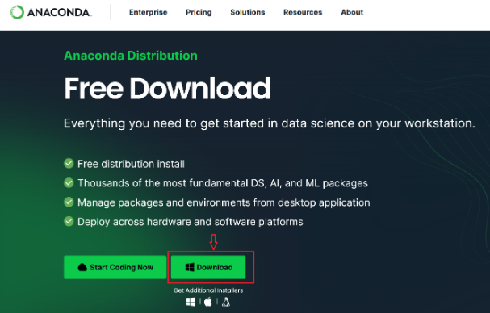
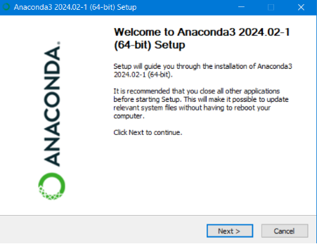
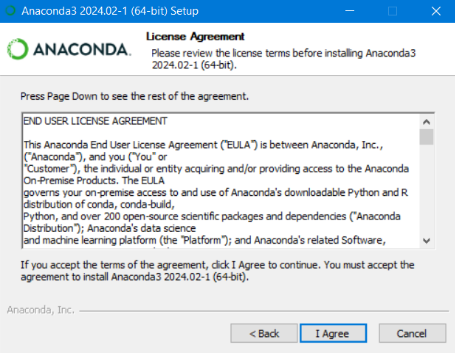
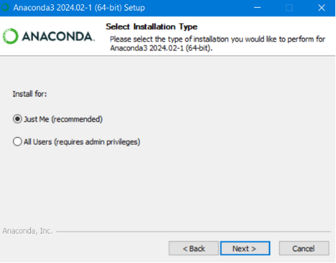
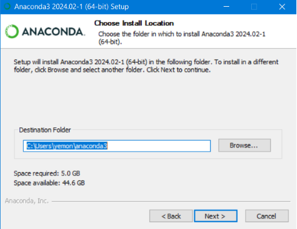
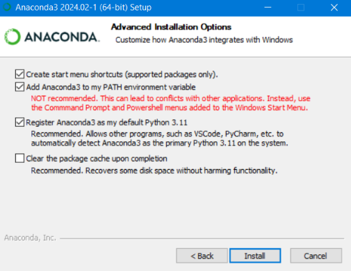
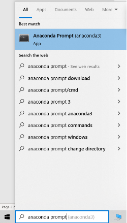
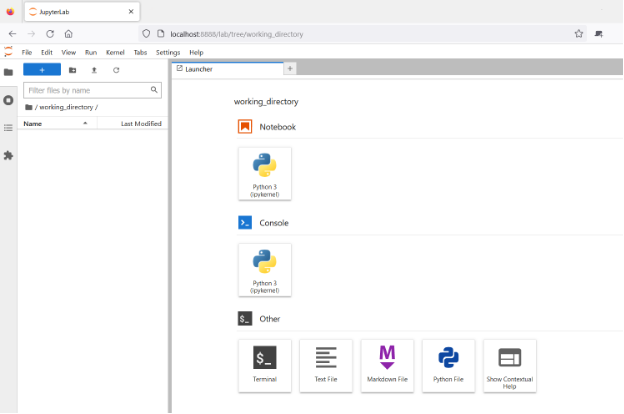

Python setup using Anaconda
Python is a popular high-level programming language with applications in different fields of science and technology. Python is a powerful tool in data science as it can automate tasks and facilitate data analysis. One of the main reasons Python is a popular programming language is its extensive external libraries and packages which can introduce new functionalities, tailored to different applications, to the base version of Python. Installing all the external packages individually can be time-consuming and as such, we recommend Anaconda, an all-in-one installer which comes with the most popular external packages for Python.
We will teach Python using JupyterLab, a programming environment that runs in a web browser (JupyterLab will be installed by Anaconda automatically). For this to work you will need a reasonably up-to-date browser. The current versions of the Chrome, Safari, and Firefox browsers are all supported.
Installation
Windows users
Open this link.
Click on the “Download” button. If you are not sure which version to choose, you probably want the
64-bit Graphical Installer Anaconda3-...-Windows-x86_64.exe.

- Install Python 3 by running the Anaconda Installer:





MacOS users
Install using the Terminal:
curl -O https://repo.anaconda.com/archive/Anaconda3-2025.12-2-MacOSX-arm64.sh
bash ./Anaconda3-2025.12-2-MacOSX-arm64.sh
/bin/rm Anaconda3-2025.12-2-MacOSX-arm64.sh
source $HOME/anaconda3/etc/profile.d/conda.shCreate a new virtual environment:
conda create --name env-conda-dhsi python=3.14And the activate and use it:
conda activate env-conda-dhsi
conda install requests plotly numpy jupyter
...
conda deactivateLinux users
Open this link.
Click on the “Download” button and download the Anaconda Installer with Python 3 for Linux.
Open a terminal emulator and navigate to the directory where the executable is downloaded (e.g.
cd ~/Downloads).Type
bash Anaconda3-then press Tab to autocomplete the full file name. The name of the file you just downloaded should appear.Press “Enter”. You will follow the text-only prompts. To move through the text, press the space bar. Type “yes” and press “Enter” to approve the license. Press “Enter” to approve the default location for the files. Type “yes” and press “Enter” to prepend Anaconda to your PATH (this makes the Anaconda distribution the default Python).
Close the terminal window.
Testing installation
Make sure you can open JupyterLab in your browser: navigate to your terminal (“Anaconda Prompt” in Windows).

Once you are in “Anaconda Prompt” (Windows), “Terminal” (macOS), or your usual terminal emulator (Linux), type jupyter lab and press “Enter”.
If you see a window similar to this screenshot in your browser, it means that you are good to go:
